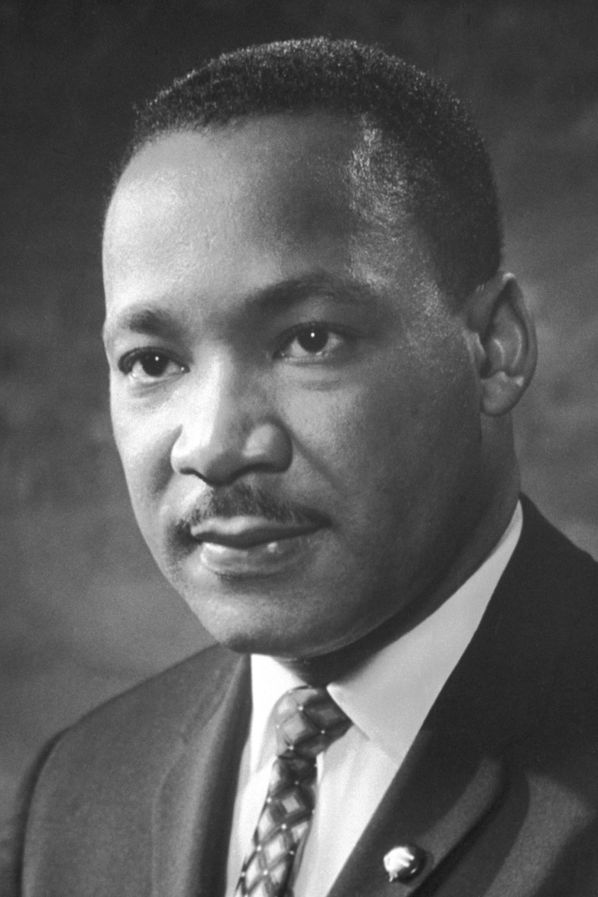

1929-1968
“If you can’t fly, then run; if you can’t run, then walk; if you can’t walk, then crawl. But whatever you do, keep moving forward.”
Martin Luther King Jr. (1929–1968) was a prominent leader in the American civil rights movement. He advocated for nonviolent protest against racial discrimination, organizing the Montgomery Bus Boycott and the March on Washington. King's famous "I Have a Dream" speech underscored his vision of racial equality. His efforts led to landmark legislation like the Civil Rights Act of 1964. Awarded the Nobel Peace Prize in 1964, King's legacy continues to inspire global movements for justice and equality.